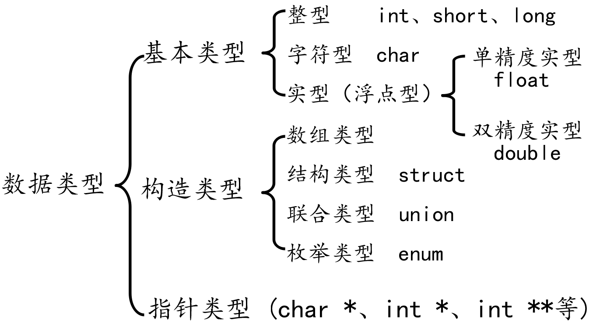
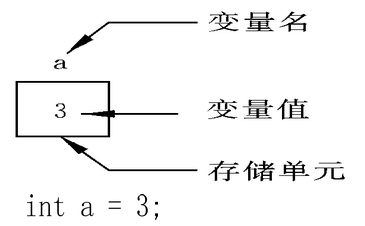
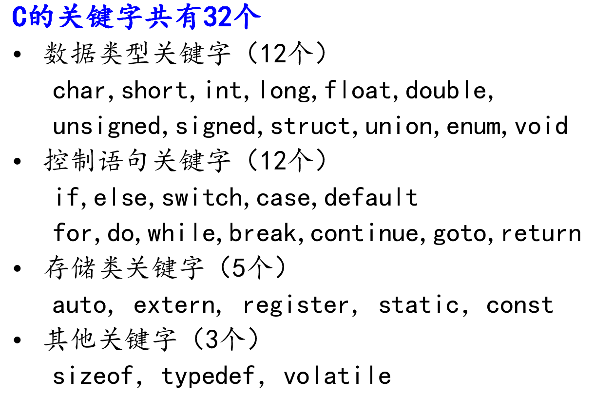
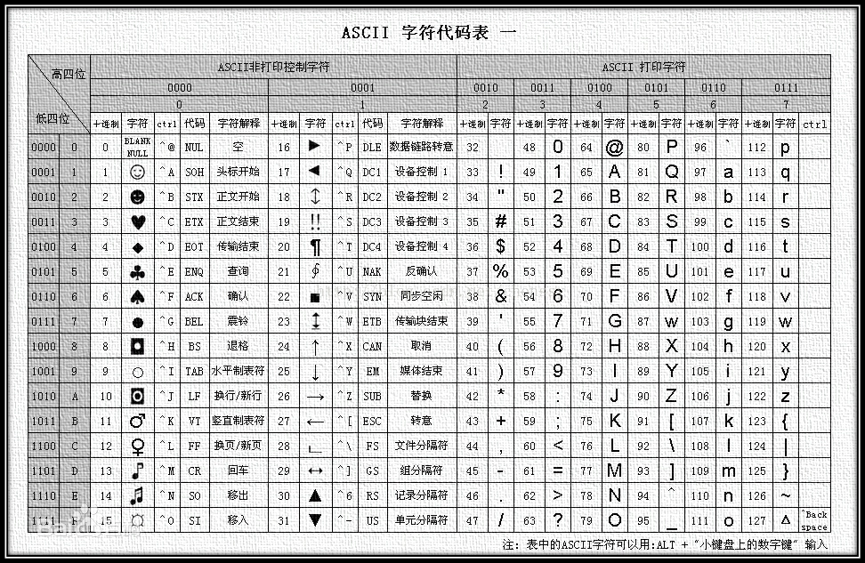
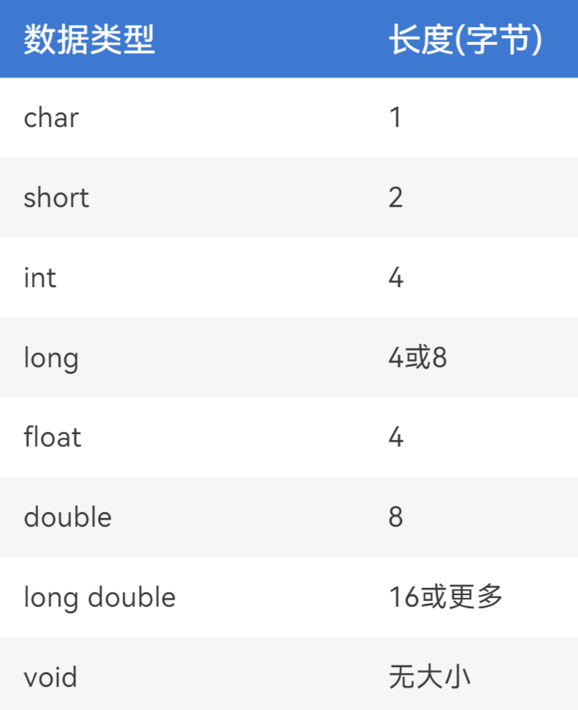
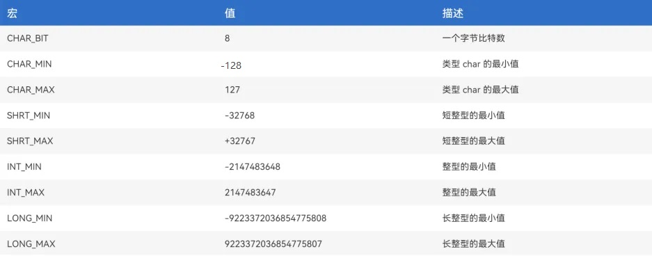

<!DOCTYPE lake>
<h1 data-lake-id="IrCtr" id="IrCtr"><span class="lake-fontsize-12" data-lake-id="u8c96d1fe" id="u8c96d1fe">数据类型介绍</span></h1><ul list="u2ebc2472"><li data-lake-id="u1fa1fa62" fid="ud7665b0b" id="u1fa1fa62"><span data-lake-id="ub64add90" id="ub64add90">数据类型：c语言中数据类型有3种，分别是基本数据类型、构造数据类型、指针数据类型。</span></li></ul><p data-lake-id="u7711afed" id="u7711afed"><br/></p><p data-lake-id="ua7a8929b" id="ua7a8929b" style="text-align: center"></p><ul list="u176275b5"><li data-lake-id="u4fa58c01" fid="uaeea0376" id="u4fa58c01"><span data-lake-id="u26db7d05" id="u26db7d05">数据类型的作用：编译器预算数据分配的内存空间大小。</span></li></ul><p data-lake-id="ud5a958e6" id="ud5a958e6" style="padding-left: 2em"></p><p data-lake-id="u422213bb" id="u422213bb" style="text-indent: 2em"><span data-lake-id="u5f0b0f1a" id="u5f0b0f1a">ps：可以通俗理解为：数据类型是用来</span><strong><span data-lake-id="uc56a6f39" id="uc56a6f39">规范内存的开销</span></strong><span data-lake-id="u4e8960e8" id="u4e8960e8">，约定</span><strong><span data-lake-id="u5ebd7f4b" id="u5ebd7f4b">数据</span></strong><span data-lake-id="ubc718288" id="ubc718288">在内存中的</span><strong><span data-lake-id="u066d1100" id="u066d1100">格式</span></strong><span data-lake-id="u70f0e8cc" id="u70f0e8cc">，便于存储。</span></p><h1 data-lake-id="DP3X0" id="DP3X0"><span data-lake-id="u78f40671" id="u78f40671">变量</span></h1><h2 data-lake-id="kuFPF" id="kuFPF"><span data-lake-id="u26cfc171" id="u26cfc171">变量的语法</span></h2><ul list="udc6a4324"><li data-lake-id="u9e738ca2" fid="ue35b0186" id="u9e738ca2"><span data-lake-id="u55656c33" id="u55656c33">在计算机程序中，变量是用来存储数据的一个内存区域，并用一个名字来表示这个区域。</span></li></ul><p data-lake-id="u32c77b37" id="u32c77b37" style="text-align: center"></p><p data-lake-id="u9aa7706c" id="u9aa7706c"><strong><span data-lake-id="uc891e80f" id="uc891e80f">使用特点</span></strong></p><ul list="udc6a4324" start="2"><li data-lake-id="uec11e0c7" fid="ue35b0186" id="uec11e0c7"><span data-lake-id="u0d734067" id="u0d734067">变量在使用前必须先定义，定义变量前必须有相应的数据类型；</span></li><li data-lake-id="udc36ccea" fid="ue35b0186" id="udc36ccea"><span data-lake-id="u0d0508b7" id="u0d0508b7">在程序运行过程中，其值可以改变；</span></li></ul><p data-lake-id="u6733b404" id="u6733b404"><strong><span data-lake-id="u0673dd2d" id="u0673dd2d">语法说明</span></strong></p><p data-lake-id="u22a975f5" id="u22a975f5" style="text-align: center"></p><p data-lake-id="u58e421ce" id="u58e421ce"><strong><span data-lake-id="ude89ab1d" id="ude89ab1d">示例代码</span></strong></p><span class="yuque-card-unsupported">[codeblock]</span><p data-lake-id="u6c008c71" id="u6c008c71"><br/></p><h2 data-lake-id="Spo25" id="Spo25"><span data-lake-id="u9b910910" id="u9b910910">标识符命名</span></h2><p data-lake-id="u26134298" id="u26134298"><span data-lake-id="u246cef84" id="u246cef84">通过上面的练习，变量会定义了，类型和赋值都一些了解了。</span></p><p data-lake-id="u3969d455" id="u3969d455"><span data-lake-id="uc36d0526" id="uc36d0526">但变量名字大家需要注意，变量名也叫</span><strong><span data-lake-id="u81835d5b" id="u81835d5b">标识符</span></strong><span data-lake-id="u81f7aae4" id="u81f7aae4">，它是用户编程时起的一个名字（变量、函数、结构体等都需要名字），为了便于后面程序中的使用，有一些命名规范我们需要遵守。</span></p><h3 data-lake-id="I5fGs" id="I5fGs"><span data-lake-id="u2edfd291" id="u2edfd291">命令规则</span></h3><p data-lake-id="ua7d9f4be" id="ua7d9f4be"><span data-lake-id="u5da60d44" id="u5da60d44">规则说明：</span></p><ul list="u2009be17"><li data-lake-id="uf408c24a" fid="u35790707" id="uf408c24a"><span data-lake-id="ud34e844d" id="ud34e844d">只能由</span><strong><span data-lake-id="u6cc014e2" id="u6cc014e2">字母、数字、下划线</span></strong><span data-lake-id="uebc1b00a" id="uebc1b00a">_组成；</span></li><li data-lake-id="ub19f1d6c" fid="u35790707" id="ub19f1d6c"><span data-lake-id="ueccb7c07" id="ueccb7c07">不能使用数字开头；</span></li><li data-lake-id="u4df262b6" fid="u35790707" id="u4df262b6"><span data-lake-id="u6f136834" id="u6f136834">不能使用关键字；</span></li></ul><ul data-lake-indent="1" list="u2009be17"><li data-lake-id="ufc645508" fid="u35790707" id="ufc645508"></li></ul><ul list="u2009be17" start="4"><li data-lake-id="u0ac64ad5" fid="u35790707" id="u0ac64ad5"><span data-lake-id="uf6653127" id="uf6653127">变量名之间大小写是区分的；</span></li></ul><h3 data-lake-id="kUf07" id="kUf07"><span data-lake-id="u6035b458" id="u6035b458">命令规范</span></h3><p data-lake-id="ue58497aa" id="ue58497aa"><span data-lake-id="u7c73dd92" id="u7c73dd92">好的命名习惯要做到</span><strong><span data-lake-id="uf49acf85" id="uf49acf85">见名知意</span></strong><span data-lake-id="u55e67786" id="u55e67786">，如下：</span></p><ul list="u8fa81b17"><li data-lake-id="ud849095d" fid="ud8fb1e1a" id="ud849095d"><span data-lake-id="u59dee22f" id="u59dee22f">大驼峰</span></li></ul><ul data-lake-indent="1" list="u8fa81b17"><li data-lake-id="u8308d611" fid="ud8fb1e1a" id="u8308d611"><span data-lake-id="u3b7b0535" id="u3b7b0535">每个单词首字母大写, 例如: MyFirstName</span></li></ul><ul list="u8fa81b17" start="2"><li data-lake-id="u9c0778d8" fid="ud8fb1e1a" id="u9c0778d8"><span data-lake-id="uad9fea30" id="uad9fea30">小驼峰</span></li></ul><ul data-lake-indent="1" list="u8fa81b17"><li data-lake-id="u30299fd3" fid="ud8fb1e1a" id="u30299fd3"><span data-lake-id="u333f1b29" id="u333f1b29">第二个单词开始首字母大写, 例如: myFirstName</span></li></ul><ul list="u8fa81b17" start="3"><li data-lake-id="u0f016278" fid="ud8fb1e1a" id="u0f016278"><span data-lake-id="u1fffd727" id="u1fffd727">下划线命名</span></li></ul><ul data-lake-indent="1" list="u8fa81b17"><li data-lake-id="u30b6faa2" fid="ud8fb1e1a" id="u30b6faa2"><span data-lake-id="uc13e8488" id="uc13e8488">每个单词之间使用下划线连接, 例如: my_first_name</span></li></ul><p data-lake-id="ueeb1ecad" id="ueeb1ecad"><span data-lake-id="u8cdeb177" id="u8cdeb177">示例</span></p><blockquote data-lake-id="u46648ff9" id="u46648ff9"><p data-lake-id="u20fe9568" id="u20fe9568"><span data-lake-id="ue365fe5f" id="ue365fe5f">背景：</span></p><p data-lake-id="u105ef77d" id="u105ef77d" style="text-indent: 2em"><span data-lake-id="uf1613f34" id="uf1613f34">班长家的房子是一个价值千万的四层别墅，别墅的房间有很多、各种家居也非常多。他所住的房间是在三楼东边的卧室，房间里有学习桌和座椅，座椅非常豪华，有2.5米高，价值一万多块。</span></p></blockquote><p data-lake-id="ua5e92277" id="ua5e92277"><span data-lake-id="u1f9c6f83" id="u1f9c6f83">请为班长的座椅起个名字，要求看到名字就知道是哪个座椅。</span></p><p data-lake-id="u483e13cf" id="u483e13cf"><span data-lake-id="ue9ecc52b" id="ue9ecc52b">例如：</span></p><ul list="u4c8fbb8c"><li data-lake-id="ubdfeac8c" fid="u773dbe4d" id="ubdfeac8c"><span data-lake-id="u32b574d4" id="u32b574d4">ThirdFloorEastRoomSeat</span></li><li data-lake-id="u68dd7076" fid="u773dbe4d" id="u68dd7076"><span data-lake-id="uca6f15ca" id="uca6f15ca">thirdFloorEastRoomSeat</span></li><li data-lake-id="u8054940c" fid="u773dbe4d" id="u8054940c"><span data-lake-id="u053875f8" id="u053875f8">third_floor_east_room_seat</span></li></ul><h1 data-lake-id="HBIKB" id="HBIKB"><span data-lake-id="ubb74127e" id="ubb74127e">char类型</span></h1><blockquote data-lake-id="uc466c2f1" id="uc466c2f1"><p data-lake-id="u94b6f8de" id="u94b6f8de"><span data-lake-id="uff01ed49" id="uff01ed49">char表示为字符类型，用于存储单个字符，每个字符变量都是由8个bit位构成，在内存中就是1个字节。</span></p></blockquote><p data-lake-id="u90115eaa" id="u90115eaa"><span data-lake-id="u0d912957" id="u0d912957">相关特性：</span></p><ul list="u2cbebe17"><li data-lake-id="u7f777969" fid="ude23c45a" id="u7f777969"><span data-lake-id="u2a576a8a" id="u2a576a8a">在给字符型变量</span><strong><span data-lake-id="ud9ab5e1a" id="ud9ab5e1a">赋值</span></strong><span data-lake-id="u65d58faa" id="u65d58faa">时，需要用一对英文半角格式的</span><strong><span data-lake-id="u2e46e020" id="u2e46e020">单引号</span></strong><span data-lake-id="uf6bb0ca9" id="uf6bb0ca9">(' ')把字符括起来。</span></li><li data-lake-id="ud9d29c2e" fid="ude23c45a" id="ud9d29c2e"><span data-lake-id="ud153f609" id="ud153f609">字符变量在内存单元存储时，是将</span><strong><span data-lake-id="u6c5ee6c5" id="u6c5ee6c5">与该字符对应的ASCII码</span></strong><span data-lake-id="ua3963a04" id="ua3963a04">放到变量的存储单元中。</span></li></ul><p data-lake-id="u4c04a628" id="u4c04a628" style="padding-left: 2em"></p><ul list="u2cbebe17" start="3"><li data-lake-id="u08121775" fid="ude23c45a" id="u08121775"><span data-lake-id="u16674bc0" id="u16674bc0">char的本质就是一个1个字节大小的整型。</span></li></ul><p data-lake-id="u9814429a" id="u9814429a"><span data-lake-id="ub4b46083" id="ub4b46083">示例代码：</span></p><span class="yuque-card-unsupported">[codeblock]</span><h1 data-lake-id="l9ZX4" id="l9ZX4"><span data-lake-id="u0fd16edb" id="u0fd16edb">布尔类型</span></h1><blockquote data-lake-id="ufc750d95" id="ufc750d95"><p data-lake-id="u196febbd" id="u196febbd"><span data-lake-id="u8db9e6e9" id="u8db9e6e9">布尔类型是一种处理逻辑的类型，其有两个值，分别是真（true）或假（false），它在内存中的长度一般只占用1个字节。</span></p></blockquote><ul list="uf9a2c6b2"><li data-lake-id="u9ca04e1b" fid="u89ab360d" id="u9ca04e1b"><span data-lake-id="u3a780df0" id="u3a780df0">早期C语言没有布尔类型数据，以0代表逻辑假，非0代表逻辑真；</span></li><li data-lake-id="ued6bbe4e" fid="u89ab360d" id="ued6bbe4e"><span data-lake-id="ucb37f84e" id="ucb37f84e">C99标准定义了新的关键字_Bool，提供了布尔类型，或者也可以使用stdbool.h中的bool；</span></li></ul><p data-lake-id="ub6a2997b" id="ub6a2997b"><span data-lake-id="uc78f888c" id="uc78f888c">示例代码：</span></p><span class="yuque-card-unsupported">[codeblock]</span><h1 data-lake-id="CJHI9" id="CJHI9"><span data-lake-id="uc671d627" id="uc671d627">数据类型长度</span></h1><p data-lake-id="u3f7a5b0d" id="u3f7a5b0d"><strong><span data-lake-id="u6d2a1e68" id="u6d2a1e68">存储单位说明</span></strong></p><table class="lake-table" data-lake-id="YHEQq" hindent="2em" id="YHEQq" margin="true" style="width: 655px"><colgroup><col width="304"/><col width="351"/></colgroup><tbody><tr data-lake-id="ue9fe6b7e" id="ue9fe6b7e"><td data-lake-id="u57e6d1c3" id="u57e6d1c3" style="background-color: rgb(249,249,249)"><p data-lake-id="u60b52d45" id="u60b52d45" style="text-align: center"><strong><span data-lake-id="u7ea02588" id="u7ea02588" style="color: rgb(68,68,68)">术语</span></strong></p></td><td data-lake-id="u9231befe" id="u9231befe" style="background-color: rgb(249,249,249)"><p data-lake-id="ufbcab0c8" id="ufbcab0c8" style="text-align: center"><strong><span data-lake-id="ub5b8deb6" id="ub5b8deb6" style="color: rgb(68,68,68)">含义</span></strong></p></td></tr><tr data-lake-id="udb37ca13" id="udb37ca13"><td data-lake-id="u42adeac5" id="u42adeac5"><p data-lake-id="uc52a9fd4" id="uc52a9fd4" style="text-align: left"><strong><span data-lake-id="uce59f20d" id="uce59f20d" style="color: rgb(0,0,0)">bit(比特)</span></strong></p></td><td data-lake-id="ue949bdff" id="ue949bdff"><p data-lake-id="ub344a238" id="ub344a238" style="text-align: left"><span data-lake-id="ua170f1c9" id="ua170f1c9">一个二进制代表一位</span><span data-lake-id="ud87dd13a" id="ud87dd13a">，一个位只能表示</span><span data-lake-id="u47613f17" id="u47613f17">0或1两种状态。数据传输是习惯以“位”（bit）为单位。</span></p></td></tr><tr data-lake-id="uc9aab350" id="uc9aab350"><td data-lake-id="ua86f9a30" id="ua86f9a30"><p data-lake-id="u5a2fe1ff" id="u5a2fe1ff" style="text-align: left"><strong><span data-lake-id="u0bc24949" id="u0bc24949" style="color: rgb(0,0,0)">Byte(字节)</span></strong></p></td><td data-lake-id="u321f44dc" id="u321f44dc"><p data-lake-id="ufdecbb91" id="ufdecbb91" style="text-align: left"><span data-lake-id="ue2679901" id="ue2679901">一个字节为</span><span data-lake-id="uf06d3e06" id="uf06d3e06">8个二进制，称为8位，</span><span data-lake-id="u6ca0d70f" id="u6ca0d70f" style="color: rgb(255,0,0)">计算机中存储的最小单位是字节</span><span data-lake-id="u86f4042e" id="u86f4042e" style="color: rgb(0,0,0)">。数据存储是习惯以</span><span data-lake-id="u02a63910" id="u02a63910" style="color: rgb(0,0,0)">“字节”（Byte）为单位。</span></p></td></tr><tr data-lake-id="u0ce50a32" id="u0ce50a32"><td data-lake-id="u4a98030f" id="u4a98030f"><p data-lake-id="u09eb0eb2" id="u09eb0eb2" style="text-align: left"><span data-lake-id="u166d1219" id="u166d1219" style="color: rgb(0,0,0)">1b</span></p></td><td data-lake-id="u12aa1d91" id="u12aa1d91"><p data-lake-id="u391888d2" id="u391888d2" style="text-align: left"><span data-lake-id="u0aeac0fa" id="u0aeac0fa" style="color: rgb(0,0,0)">1bit</span></p></td></tr><tr data-lake-id="uc433270c" id="uc433270c" style="height: 36px"><td data-lake-id="uef1675ae" id="uef1675ae"><p data-lake-id="u9553970b" id="u9553970b" style="text-align: left"><span data-lake-id="u1d1d84e3" id="u1d1d84e3" style="color: rgb(0,0,0)">1B</span></p></td><td data-lake-id="u0a9f9d96" id="u0a9f9d96"><p data-lake-id="uf7d5a61b" id="uf7d5a61b" style="text-align: left"><span data-lake-id="u42461cef" id="u42461cef" style="color: rgb(0,0,0)">1Byte = 8bit</span></p></td></tr><tr data-lake-id="u59a40af9" id="u59a40af9" style="height: 36px"><td data-lake-id="u80f7daea" id="u80f7daea"><p data-lake-id="u4d44dab7" id="u4d44dab7"><span data-lake-id="udf718382" id="udf718382">1KB</span></p></td><td data-lake-id="u4e6a4beb" id="u4e6a4beb"><p data-lake-id="ud3bdc1e6" id="ud3bdc1e6"><span data-lake-id="u92f1460f" id="u92f1460f">1KB = 1024B</span></p></td></tr><tr data-lake-id="u039c79b7" id="u039c79b7"><td data-lake-id="uda054b57" id="uda054b57"><p data-lake-id="u834c6186" id="u834c6186"><span data-lake-id="uf2e6dcff" id="uf2e6dcff">1MB</span></p></td><td data-lake-id="u10791027" id="u10791027"><p data-lake-id="uead53088" id="uead53088"><span data-lake-id="u35fac7ba" id="u35fac7ba">1MB = 1024KB</span></p></td></tr><tr data-lake-id="ua48a431c" id="ua48a431c"><td data-lake-id="u62b1e930" id="u62b1e930"><p data-lake-id="u01d28844" id="u01d28844" style="text-align: left"><span data-lake-id="u510e4dbb" id="u510e4dbb" style="color: rgb(0,0,0)">1GB</span></p></td><td data-lake-id="u8ad5e260" id="u8ad5e260"><p data-lake-id="u0790846f" id="u0790846f" style="text-align: left"><span data-lake-id="u80b1d5b3" id="u80b1d5b3" style="color: rgb(0,0,0)">1GB = 1024MB</span></p></td></tr><tr data-lake-id="uc4a2c0cc" id="uc4a2c0cc" style="height: 36px"><td data-lake-id="uec7454cb" id="uec7454cb"><p data-lake-id="u0fa097c4" id="u0fa097c4" style="text-align: left"><span data-lake-id="u0e1718d1" id="u0e1718d1" style="color: rgb(0,0,0)">1TB</span></p></td><td data-lake-id="u9de82d8c" id="u9de82d8c"><p data-lake-id="u04e6e88a" id="u04e6e88a" style="text-align: left"><span data-lake-id="ud6a0ce13" id="ud6a0ce13" style="color: rgb(0,0,0)">1TB = 1024GB</span></p></td></tr><tr data-lake-id="u6cb93cb2" id="u6cb93cb2" style="height: 36px"><td data-lake-id="ue0d76193" id="ue0d76193"><p data-lake-id="ub5f5c32c" id="ub5f5c32c"><span data-lake-id="ue0d27090" id="ue0d27090">1PB</span></p></td><td data-lake-id="u1d25bbed" id="u1d25bbed"><p data-lake-id="u3c37e7c2" id="u3c37e7c2"><span data-lake-id="u5f2c318c" id="u5f2c318c">1PB = 1024TB</span></p></td></tr><tr data-lake-id="u88a0cad4" id="u88a0cad4" style="height: 36px"><td data-lake-id="u8aa68130" id="u8aa68130"><p data-lake-id="u3d0b8584" id="u3d0b8584"><span data-lake-id="u70749ed4" id="u70749ed4">……</span></p></td><td data-lake-id="u512513da" id="u512513da"><p data-lake-id="u7ce23c58" id="u7ce23c58"><span data-lake-id="ub2072f07" id="ub2072f07">……</span></p></td></tr></tbody></table><p data-lake-id="u3d016417" id="u3d016417"><span data-lake-id="u161d613a" id="u161d613a">​</span><br/></p><details class="lake-collapse" data-lake-id="u027db9e2" id="u027db9e2" open="false"><summary class="lake-summary" data-lake-id="uff0829a6" id="uff0829a6"><span data-lake-id="ud2c17df6" id="ud2c17df6">问题：</span></summary><p data-lake-id="u8934a3c5" id="u8934a3c5"><span data-lake-id="u8c0ac054" id="u8c0ac054">班长家的大别墅装了一个千兆光纤，请帮班长计算一下，班长的网速最高可以达到多少？</span></p></details><p data-lake-id="u19338573" id="u19338573"><br/></p><p data-lake-id="uede7fac9" id="uede7fac9"><strong><span data-lake-id="ue564a29a" id="ue564a29a">基本数据类型长度</span></strong></p><blockquote data-lake-id="ubf23022f" id="ubf23022f"><p data-lake-id="uc237cdb2" id="uc237cdb2"><span data-lake-id="ud1946498" id="ud1946498">数据类型的长度会受操作系统平台的影响，所以在不同平台下基本数据类型的长度是不一样的。</span></p></blockquote><p data-lake-id="u2df41f4e" id="u2df41f4e" style="text-align: center"></p><p data-lake-id="uc5144f4f" id="uc5144f4f"><span data-lake-id="u2ed429f3" id="u2ed429f3">示例代码：</span></p><span class="yuque-card-unsupported">[codeblock]</span><p data-lake-id="u39edabcf" id="u39edabcf"><span data-lake-id="uca9e223f" id="uca9e223f">ps：在单片机开发中，int在8位的单片机中长度为2个字节，在32位的单片机中长度为4个字节。</span></p><h1 data-lake-id="bMp4b" id="bMp4b"><span data-lake-id="u4b18e8ae" id="u4b18e8ae">可移植的类型</span></h1><blockquote data-lake-id="ubc4a0776" id="ubc4a0776"><p data-lake-id="u33a92936" id="u33a92936"><span data-lake-id="uf0c193b4" id="uf0c193b4">最开始我们介绍C语言是一门跨平台的编程语言，使用C语言编写的程序可以在不同的系统平台下运行，这里有一些</span><strong><span data-lake-id="u9d1a9e52" id="u9d1a9e52">前提</span></strong><span data-lake-id="u4d009101" id="u4d009101">，为了</span><strong><span data-lake-id="u46081b23" id="u46081b23">更好的兼容</span></strong><span data-lake-id="u2b3d9a73" id="u2b3d9a73">不同平台，我们在使用基本上数据类型的时候会</span><strong><span data-lake-id="u1d1f2227" id="u1d1f2227">采用可移植的类型</span></strong><span data-lake-id="u549465be" id="u549465be">，这些类型可以确保在不同的平台下稳定的运行。</span></p></blockquote><ul list="u62cc73ef"><li data-lake-id="u9fb3f270" fid="u8c575db1" id="u9fb3f270"><span data-lake-id="u39f9d0b7" id="u39f9d0b7">C语言在可移植类型头文件 stdint.h 和 inttypes.h 中规定了精确宽度整数类型，以确保C语言的类型在各系统内功能相同。</span></li></ul><p data-lake-id="u76c56122" id="u76c56122"><span data-lake-id="ue1c35c0f" id="ue1c35c0f">示例代码：</span></p><span class="yuque-card-unsupported">[codeblock]</span><h1 data-lake-id="yOfv8" id="yOfv8"><span data-lake-id="u89a37e9c" id="u89a37e9c">常量</span></h1><p data-lake-id="u5d724190" id="u5d724190"><span data-lake-id="uc0c8e73b" id="uc0c8e73b">与变量不同，常量的值在程序运行时不会改变。</span></p><table class="lake-table" data-lake-id="gYKnc" id="gYKnc" margin="true" style="width: 546px" width-mode="normal"><colgroup><col width="273"/><col width="273"/></colgroup><tbody><tr data-lake-id="u720f3045" id="u720f3045"><td data-lake-id="u29ae6aba" id="u29ae6aba"><p data-lake-id="ucd533bb9" id="ucd533bb9" style="text-align: left"><span data-lake-id="ufdd0da73" id="ufdd0da73" style="color: rgb(0,0,0)">整型</span><span data-lake-id="ua434af05" id="ua434af05" style="color: rgb(0,0,0)">常量</span></p></td><td data-lake-id="u988df303" id="u988df303"><p data-lake-id="u57a7a0f3" id="u57a7a0f3" style="text-align: left"><span data-lake-id="u345734c9" id="u345734c9">100，</span><span data-lake-id="ud136a654" id="ud136a654">200</span><span data-lake-id="ud197fdac" id="ud197fdac">，</span><span data-lake-id="u966ede6c" id="u966ede6c">-100，0</span></p></td></tr><tr data-lake-id="u31c76d02" id="u31c76d02"><td data-lake-id="u3ec53b54" id="u3ec53b54"><p data-lake-id="ud18ea2dd" id="ud18ea2dd" style="text-align: left"><span data-lake-id="u573c92a9" id="u573c92a9" style="color: rgb(0,0,0)">实型</span><span data-lake-id="u56010d5c" id="u56010d5c" style="color: rgb(0,0,0)">常量</span></p></td><td data-lake-id="u81f7c906" id="u81f7c906"><p data-lake-id="u8f5f1a87" id="u8f5f1a87" style="text-align: left"><span data-lake-id="u703743da" id="u703743da">3.14 ， 0.125，-3.</span><span data-lake-id="u39f2bc4c" id="u39f2bc4c">123</span></p></td></tr><tr data-lake-id="ue5824b30" id="ue5824b30"><td data-lake-id="u545d6660" id="u545d6660"><p data-lake-id="u7dd8e4cd" id="u7dd8e4cd" style="text-align: left"><span data-lake-id="u5bbdf268" id="u5bbdf268" style="color: rgb(0,0,0)">字符型常量</span></p></td><td data-lake-id="uacce489d" id="uacce489d"><p data-lake-id="u87f11273" id="u87f11273" style="text-align: left"><span data-lake-id="u21328f98" id="u21328f98">'a', 'b', '1' </span></p></td></tr><tr data-lake-id="u35dece60" id="u35dece60"><td data-lake-id="uc63e4ebc" id="uc63e4ebc"><p data-lake-id="u2d3456c0" id="u2d3456c0" style="text-align: left"><span data-lake-id="u2221719f" id="u2221719f" style="color: rgb(0,0,0)">字符串常量</span></p></td><td data-lake-id="u159061d0" id="u159061d0"><p data-lake-id="uda9dd9f3" id="uda9dd9f3" style="text-align: left"><span data-lake-id="uc6896dbf" id="uc6896dbf">"a", "ab"，"12356"</span></p></td></tr></tbody></table><h2 data-lake-id="cPO5l" id="cPO5l"><span data-lake-id="ub5d8bf9f" id="ub5d8bf9f">自定义的常量</span></h2><p data-lake-id="u890d3668" id="u890d3668"><span data-lake-id="u3ec34aa4" id="u3ec34aa4">常量的定义方式有两种:</span></p><span class="yuque-card-unsupported">[codeblock]</span><p data-lake-id="u74e02a47" id="u74e02a47"><span data-lake-id="ua0bdd809" id="ua0bdd809">​</span><br/></p><p data-lake-id="uf0da4878" id="uf0da4878"><span data-lake-id="ub8488cd0" id="ub8488cd0">示例代码：</span></p><span class="yuque-card-unsupported">[codeblock]</span><h2 data-lake-id="oW4d1" id="oW4d1"><span data-lake-id="u54ef503d" id="u54ef503d">系统定义的常量</span></h2><blockquote data-lake-id="uf02289e8" id="uf02289e8"><p data-lake-id="uec74ef7f" id="uec74ef7f"><span data-lake-id="u6d914824" id="u6d914824">C语言提供了一些常量库，比如有：float.h、limits.h等，这些常量同样受操作系统平台的影响会在不同的平台下不一样。</span></p></blockquote><p data-lake-id="uc413524e" id="uc413524e"><span data-lake-id="u313fb053" id="u313fb053">float.h：</span></p><p data-lake-id="uf3c0d9d0" id="uf3c0d9d0"></p><p data-lake-id="u79740d93" id="u79740d93"><span data-lake-id="uec726ff6" id="uec726ff6">limits.h：</span></p><p data-lake-id="uf3e4ada0" id="uf3e4ada0"></p><p data-lake-id="u03ced3fd" id="u03ced3fd"><br/></p><p data-lake-id="u76719c99" id="u76719c99"><span data-lake-id="u9a8b3837" id="u9a8b3837">示例代码：</span></p><span class="yuque-card-unsupported">[codeblock]</span>